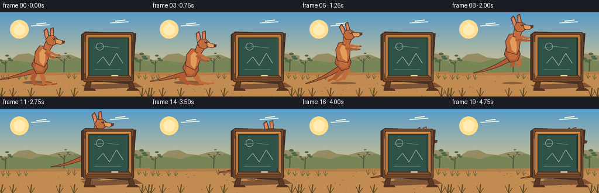
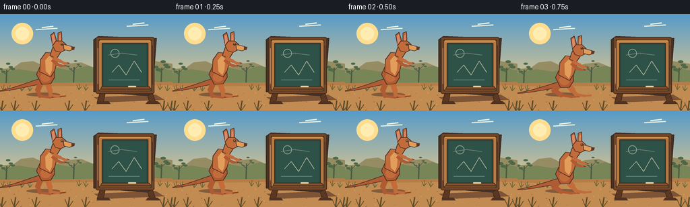
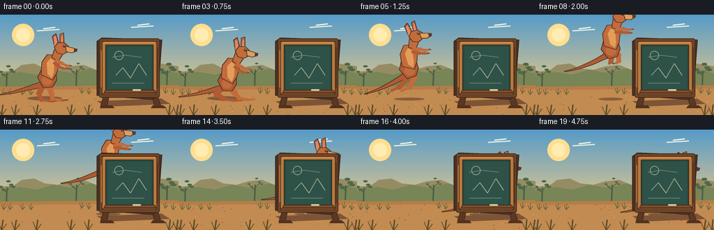

CODING AGENTS AS PIXEL WORLD MODELS
traex/GPT-5.6-Sol · dynamic_spatial_relationship_0034
点击播放 · 原生 RGB 像素
逐轮保存的候选
回放视频、检查图与代码变化。
每份候选均可单独播放。实际图片检查记录在下方工具轨迹中。
候选 01播放与检查图
点击播放 · 原生 RGB 像素

展开代码变化
--- 上一保存版本
+++ 本次保存版本
@@ -0,0 +1,291 @@
+from pathlib import Path
+import math
+import numpy as np
+from PIL import Image, ImageDraw, ImageFilter
+import artifact_io
+
+W, H, N = 256, 144, 20
+S = 4
+rng = np.random.default_rng(34)
+
+def sc(v):
+ if isinstance(v, (tuple, list)):
+ return tuple(int(round(x*S)) for x in v)
+ return int(round(v*S))
+
+def ellipse(d, box, fill, outline=None, width=1):
+ d.ellipse(sc(box), fill=fill, outline=outline, width=sc(width) if outline else 1)
+
+def poly(d, pts, fill, outline=None, width=1):
+ p=[sc(x) for x in pts]
+ d.polygon(p, fill=fill)
+ if outline:
+ d.line(p+[p[0]], fill=outline, width=sc(width), joint='curve')
+
+def line(d, pts, fill, width=1):
+ d.line([sc(x) for x in pts], fill=fill, width=sc(width), joint='curve')
+
+def rounded(d, box, r, fill, outline=None, width=1):
+ d.rounded_rectangle(sc(box), radius=sc(r), fill=fill, outline=outline, width=sc(width))
+
+def bezier(p0,p1,p2,p3,n=20):
+ out=[]
+ for t in np.linspace(0,1,n):
+ q=1-t
+ out.append((q**3*p0[0]+3*q*q*t*p1[0]+3*q*t*t*p2[0]+t**3*p3[0],
+ q**3*p0[1]+3*q*q*t*p1[1]+3*q*t*t*p2[1]+t**3*p3[1]))
+ return out
+
+def rotate_point(p, a):
+ c,s=math.cos(a),math.sin(a)
+ return (p[0]*c-p[1]*s,p[0]*s+p[1]*c)
+
+def tr(points, cx, cy, angle=0):
+ return [(cx+rotate_point(p,angle)[0], cy+rotate_point(p,angle)[1]) for p in points]
+
+def draw_background(img, fi):
+ d=ImageDraw.Draw(img)
+ # luminous Australian sky gradient
+ top=np.array([86,155,201]); bot=np.array([245,205,132])
+ arr=np.zeros((H*S,W*S,3),dtype=np.uint8)
+ for yy in range(H*S):
+ y=yy/(H*S-1)
+ t=min(1,y*1.18)
+ col=(top*(1-t)+bot*t).astype(np.uint8)
+ arr[yy,:,:]=col
+ img.paste(Image.fromarray(arr), (0,0))
+ d=ImageDraw.Draw(img)
+ # sun haze
+ ellipse(d,(17,13,49,45),(255,222,144))
+ ellipse(d,(23,19,43,39),(255,236,178))
+ # wispy clouds
+ for bx,by in [(70,20),(205,15)]:
+ line(d,[(bx-17,by+3),(bx+15,by+1)],(222,235,225),2)
+ line(d,[(bx-8,by),(bx+9,by-2)],(235,242,230),2)
+ # distant mesas and hills
+ poly(d,[(0,82),(20,80),(31,72),(49,70),(64,77),(83,79),(100,74),(120,72),(140,80),(165,76),(190,73),(210,78),(230,70),(256,74),(256,108),(0,108)],(150,140,99))
+ poly(d,[(0,88),(28,82),(52,86),(77,79),(105,84),(130,77),(152,84),(180,79),(207,86),(231,79),(256,84),(256,111),(0,111)],(119,133,87))
+ # faint eucalyptus silhouettes
+ for x,y,scale in [(9,88,.8),(239,85,1.0),(109,84,.55)]:
+ line(d,[(x,y+22),(x+1,y-5)],(75,92,67),2)
+ line(d,[(x,y+2),(x-7,y-4)],(75,92,67),1)
+ line(d,[(x+1,y-1),(x+8,y-8)],(75,92,67),1)
+ for ex,ey in [(x-8,y-6),(x-4,y-2),(x+7,y-9),(x+10,y-6),(x+3,y-14)]:
+ ellipse(d,(ex-4*scale,ey-2*scale,ex+4*scale,ey+2*scale),(77,105,71))
+ # earth
+ poly(d,[(0,103),(256,101),(256,144),(0,144)],(181,125,72))
+ poly(d,[(0,108),(256,106),(256,144),(0,144)],(194,139,81))
+ # mottled dirt texture
+ for j in range(90):
+ x=float(rng.integers(0,W)); y=float(rng.integers(108,H))
+ r=float(rng.choice([.25,.4,.6,1.0]))
+ c=(154,104,66) if j%3 else (219,161,92)
+ ellipse(d,(x-r,y-r*.4,x+r,y+r*.4),c)
+ # tufts in midground
+ for x in [5,14,32,44,117,127,237,248]:
+ base=113+(x%3)
+ c=(102,103,58)
+ line(d,[(x,base),(x-3,base-7)],c,1)
+ line(d,[(x,base),(x+1,base-9)],c,1)
+ line(d,[(x,base),(x+4,base-5)],c,1)
+
+def draw_shadow(d, fi, x, progress):
+ if fi < 4:
+ ellipse(d,(x-28,117,x+22,123),(132,91,59))
+ elif fi <= 15:
+ u=(fi-4)/11
+ # shadow travels along the ground, tightens at landing
+ ww=24-7*math.sin(math.pi*u)
+ alpha_col=(138,93,58)
+ ellipse(d,(x-ww,119,x+ww,123),alpha_col)
+ else:
+ ellipse(d,(161,119,222,124),(130,88,57))
+
+def kangaroo_pose(fi):
+ if fi <= 2:
+ return 67,96,0.0,'stand',0.0
+ if fi == 3:
+ return 69,101,0.03,'crouch',0.0
+ if fi <= 15:
+ u=(fi-4)/11
+ ease=u*u*(3-2*u)
+ x=72+119*ease
+ y=98-48*4*u*(1-u)
+ # nose slightly down on launch, up around apex, down toward landing
+ ang=math.radians(-8 + 14*(u-.45))
+ return x,y,ang,'leap',u
+ return 191,100+min(2,fi-16)*.4,0.02,'hidden',1.0
+
+def limb(d, points, color, widths):
+ # tapered multi-segment rounded limb
+ for k in range(len(points)-1):
+ line(d,[points[k],points[k+1]],color,widths[min(k,len(widths)-1)])
+ ellipse(d,(points[k+1][0]-widths[min(k,len(widths)-1)]/2,
+ points[k+1][1]-widths[min(k,len(widths)-1)]/2,
+ points[k+1][0]+widths[min(k,len(widths)-1)]/2,
+ points[k+1][1]+widths[min(k,len(widths)-1)]/2),color)
+
+def draw_kangaroo(img, fi, x, y, ang, pose, u):
+ d=ImageDraw.Draw(img)
+ fur=(176,91,51); fur_mid=(194,108,59); light=(226,157,91); dark=(91,55,40); outline=(74,46,36)
+ # Tail: powerful, long, tapering to the left. Dynamic curve sampled as polygon.
+ if pose=='leap':
+ lift=7+6*math.sin(math.pi*u)
+ center=bezier((-2,2),(-24,8+lift*.2),(-46,14+lift*.2),(-70,15+lift*.15),15)
+ else:
+ center=bezier((-2,3),(-24,8),(-45,16),(-69,19),15)
+ upper=[]; lower=[]
+ for j,p in enumerate(center):
+ rad=7.5*(1-j/(len(center)-1))+.5
+ upper.append((p[0],p[1]-rad*.55)); lower.append((p[0],p[1]+rad*.55))
+ poly(d,tr(upper+lower[::-1],x,y,ang),fur,outline,1)
+ # pose-specific hind legs, behind body
+ if pose=='stand':
+ leg1=tr([(-5,3),(-11,17),(-8,26),(7,28),(17,27)],x,y,ang)
+ limb(d,leg1,fur,[8,6,4,3]); line(d,[leg1[-2],leg1[-1]],outline,1)
+ leg2=tr([(2,4),(7,18),(8,25),(22,27),(30,26)],x,y,ang)
+ limb(d,leg2,fur_mid,[8,6,4,3]); line(d,[leg2[-2],leg2[-1]],outline,1)
+ elif pose=='crouch':
+ leg1=tr([(-5,2),(-14,13),(-4,20),(12,22),(23,21)],x,y,ang)
+ limb(d,leg1,fur,[9,7,4,3])
+ leg2=tr([(3,2),(12,11),(18,18),(31,20),(40,19)],x,y,ang)
+ limb(d,leg2,fur_mid,[9,6,4,3])
+ elif pose in ('leap','hidden'):
+ # launch legs extend backward, then tuck forward, then extend for landing
+ if u < .38:
+ q=u/.38
+ knee=(-7+8*q,10-4*q); ankle=(-25+24*q,20-7*q); foot=(-39+36*q,22-7*q)
+ knee2=(4+6*q,11-5*q); ankle2=(-9+19*q,24-10*q); foot2=(-24+31*q,27-11*q)
+ elif u < .68:
+ q=(u-.38)/.30
+ knee=(1+7*q,6+3*q); ankle=(0+14*q,13+2*q); foot=(-3+23*q,15+2*q)
+ knee2=(10+5*q,6+3*q); ankle2=(10+14*q,14+2*q); foot2=(7+25*q,16+2*q)
+ else:
+ q=(u-.68)/.32
+ knee=(8-3*q,9+6*q); ankle=(14+4*q,15+11*q); foot=(20+15*q,17+12*q)
+ knee2=(15-5*q,9+7*q); ankle2=(24+1*q,16+10*q); foot2=(32+13*q,18+11*q)
+ limb(d,tr([(-4,1),knee,ankle,foot],x,y,ang),fur,[9,7,4,3])
+ limb(d,tr([(4,2),knee2,ankle2,foot2],x,y,ang),fur_mid,[9,7,4,3])
+ # broad haunch
+ pts=tr([(-13,-6),(-8,-17),(3,-21),(13,-14),(14,-2),(8,8),(-5,9)],x,y,ang)
+ poly(d,pts,fur,outline,1)
+ ellipse(d,(x-7,y-9,x+8,y+5),fur_mid)
+ # upright tapered torso
+ body=tr([(-8,-10),(-7,-28),(1,-39),(11,-38),(18,-26),(14,-12),(8,-2)],x,y,ang)
+ poly(d,body,fur_mid,outline,1)
+ # warm belly highlight
+ belly=tr([(1,-11),(0,-27),(6,-34),(11,-29),(10,-13),(7,-5)],x,y,ang)
+ poly(d,belly,light)
+ # neck
+ neck=tr([(7,-34),(11,-46),(19,-49),(24,-41),(17,-30)],x,y,ang)
+ poly(d,neck,fur_mid,outline,1)
+ # ears behind head
+ ear1=tr([(12,-46),(8,-65),(13,-69),(19,-49)],x,y,ang)
+ ear2=tr([(19,-48),(19,-68),(24,-70),(25,-47)],x,y,ang)
+ poly(d,ear1,fur,outline,1); poly(d,ear2,fur_mid,outline,1)
+ poly(d,tr([(11,-49),(10,-64),(13,-66),(16,-49)],x,y,ang),(221,137,105))
+ poly(d,tr([(20,-50),(21,-64),(23,-66),(23,-49)],x,y,ang),(221,137,105))
+ # head and muzzle
+ head=tr([(11,-49),(16,-56),(25,-56),(31,-51),(31,-43),(23,-39),(15,-41)],x,y,ang)
+ poly(d,head,fur_mid,outline,1)
+ muzzle=tr([(27,-51),(39,-48),(42,-44),(36,-41),(28,-43)],x,y,ang)
+ poly(d,muzzle,light,outline,1)
+ nose=tr([(39,-48),(44,-47),(43,-43),(39,-42)],x,y,ang)
+ poly(d,nose,dark)
+ # eye + glint
+ eye=tr([(25,-51)],x,y,ang)[0]
+ ellipse(d,(eye[0]-2,eye[1]-2,eye[0]+2,eye[1]+2),dark)
+ ellipse(d,(eye[0]-.6,eye[1]-1.2,eye[0]+.3,eye[1]-.3),(250,234,195))
+ # arms swing forward in jump
+ if pose=='leap':
+ swing=4*math.sin(math.pi*u)
+ a1=tr([(12,-31),(23,-27-swing),(30,-24-swing),(35,-24-swing)],x,y,ang)
+ a2=tr([(10,-28),(20,-22-swing),(28,-20-swing),(32,-19-swing)],x,y,ang)
+ else:
+ a1=tr([(12,-31),(22,-26),(28,-23),(33,-23)],x,y,ang)
+ a2=tr([(10,-28),(18,-21),(24,-19),(29,-19)],x,y,ang)
+ limb(d,a2,fur,[5,4,3]); limb(d,a1,fur_mid,[5,4,3])
+ # dark little paws/claws
+ line(d,[a1[-1],(a1[-1][0]+3,a1[-1][1])],dark,1)
+ line(d,[a2[-1],(a2[-1][0]+3,a2[-1][1])],dark,1)
+
+
+def draw_dust(img, fi):
+ if fi < 14: return
+ d=ImageDraw.Draw(img)
+ t=fi-14
+ for k in range(12):
+ side=-1 if k%2==0 else 1
+ x=187+side*(5+k*2.2+t*1.1)
+ y=119-((k*7+t*5)%12)*.35
+ r=max(.5,2.0-.18*t-(k%3)*.25)
+ ellipse(d,(x-r,y-r,x+r,y+r),(211,158,98))
+
+def draw_board(img):
+ d=ImageDraw.Draw(img)
+ # cast shadow and sturdy splayed feet
+ poly(d,[(139,124),(231,120),(244,128),(151,132)],(125,84,54))
+ # back braces / legs
+ poly(d,[(151,109),(158,109),(153,132),(144,132)],(92,55,33), (65,42,29),1)
+ poly(d,[(216,109),(223,109),(231,132),(222,132)],(92,55,33), (65,42,29),1)
+ poly(d,[(147,130),(161,130),(164,134),(143,134)],(81,50,32))
+ poly(d,[(219,130),(234,130),(238,134),(216,134)],(81,50,32))
+ # thick dark side gives depth
+ poly(d,[(139,38),(146,33),(232,36),(226,116),(219,122),(139,116)],(76,49,34),(54,38,30),1)
+ # board timber frame
+ rounded(d,(142,34,229,119),3,(113,69,39),(62,43,31),1)
+ # frame highlights
+ rounded(d,(146,38,225,115),1,(184,122,63),(79,50,31),1)
+ # deep green writing surface
+ rounded(d,(151,43,220,110),1,(40,73,65),(55,38,27),1)
+ # soft worn chalkboard center
+ rounded(d,(154,46,217,107),1,(47,82,72))
+ # subtle erased chalk haze and scratches (decorative, no text)
+ line(d,[(161,61),(180,58),(203,61)],(117,144,125),1)
+ line(d,[(166,87),(176,76),(187,91),(199,70),(210,87)],(161,171,143),1)
+ ellipse(d,(164,52,177,65),None,(148,165,144),1)
+ line(d,[(161,98),(207,98)],(104,133,116),1)
+ # wooden corner grain and highlights
+ line(d,[(147,40),(223,40)],(224,158,82),1)
+ line(d,[(147,113),(223,113)],(90,50,29),1)
+ line(d,[(145,51),(145,104)],(215,141,68),1)
+ line(d,[(226,47),(226,105)],(73,44,29),1)
+ # small chalk ledge
+ poly(d,[(151,108),(221,108),(224,112),(149,112)],(130,79,42),(67,43,30),1)
+ rounded(d,(190,107,202,109),1,(224,214,168))
+ # nail heads
+ for xx in [147,224]:
+ for yy in [39,114]:
+ ellipse(d,(xx-1,yy-1,xx+1,yy+1),(69,48,38))
+
+def draw_foreground(img, fi):
+ d=ImageDraw.Draw(img)
+ # foreground grass silhouettes add depth
+ for x in [2,21,52,101,126,242,253]:
+ base=144
+ c=(93,76,42)
+ phase=.4*math.sin(fi*.5+x)
+ line(d,[(x,base),(x-5+phase,132)],c,1)
+ line(d,[(x,base),(x+2+phase,129)],c,2)
+ line(d,[(x+1,base),(x+7+phase,135)],c,1)
+
+def make_frame(fi):
+ img=Image.new('RGB',(W*S,H*S))
+ draw_background(img,fi)
+ d=ImageDraw.Draw(img)
+ x,y,ang,pose,u=kangaroo_pose(fi)
+ draw_shadow(d,fi,x,u)
+ draw_kangaroo(img,fi,x,y,ang,pose,u)
+ # Landing dust is behind the board, visible around its edges.
+ draw_dust(img,fi)
+ # Crucial occlusion: board is composited after kangaroo, so it passes behind it.
+ draw_board(img)
+ draw_foreground(img,fi)
+ return np.asarray(img.resize((W,H),Image.Resampling.LANCZOS),dtype=np.uint8)
+
+def main():
+ frames=np.stack([make_frame(i) for i in range(N)])
+ artifact_io.save(frames,Path(__file__).resolve().parent)
+
+if __name__=='__main__':
+ main()
候选 02播放与检查图
点击播放 · 原生 RGB 像素

展开代码变化
--- 上一保存版本
+++ 本次保存版本
@@ -110,7 +110,7 @@
u=(fi-4)/11
ease=u*u*(3-2*u)
x=72+119*ease
- y=98-48*4*u*(1-u)
+ y=98-24*4*u*(1-u)
# nose slightly down on launch, up around apex, down toward landing
ang=math.radians(-8 + 14*(u-.45))
return x,y,ang,'leap',u
候选 03播放与检查图
点击播放 · 原生 RGB 像素

展开代码变化
--- 上一保存版本
+++ 本次保存版本
@@ -45,6 +45,8 @@
def draw_background(img, fi):
d=ImageDraw.Draw(img)
+ # Reset the texture RNG so the environment remains temporally stable.
+ texture_rng = np.random.default_rng(34)
# luminous Australian sky gradient
top=np.array([86,155,201]); bot=np.array([245,205,132])
arr=np.zeros((H*S,W*S,3),dtype=np.uint8)
@@ -77,8 +79,8 @@
poly(d,[(0,108),(256,106),(256,144),(0,144)],(194,139,81))
# mottled dirt texture
for j in range(90):
- x=float(rng.integers(0,W)); y=float(rng.integers(108,H))
- r=float(rng.choice([.25,.4,.6,1.0]))
+ x=float(texture_rng.integers(0,W)); y=float(texture_rng.integers(108,H))
+ r=float(texture_rng.choice([.25,.4,.6,1.0]))
c=(154,104,66) if j%3 else (219,161,92)
ellipse(d,(x-r,y-r*.4,x+r,y+r*.4),c)
# tufts in midground
@@ -275,7 +277,10 @@
d=ImageDraw.Draw(img)
x,y,ang,pose,u=kangaroo_pose(fi)
draw_shadow(d,fi,x,u)
- draw_kangaroo(img,fi,x,y,ang,pose,u)
+ # One final glimpse at the board's rim, then total occlusion confirms that
+ # the kangaroo has landed behind it rather than passing in front.
+ if pose != 'hidden' or fi == 16:
+ draw_kangaroo(img,fi,x,y,ang,pose,u)
# Landing dust is behind the board, visible around its edges.
draw_dust(img,fi)
# Crucial occlusion: board is composited after kangaroo, so it passes behind it.
可观测工具轨迹
实际执行的命令与返回图片。
命令 1exit 0
/bin/bash -lc "cat prompt.txt && printf '\\n--- GENERATION_RULES ---\\n' && cat GENERATION_RULES.md && printf '\\n--- TASK_SPEC ---\\n' && cat task_spec.json"
命令 2exit 0
/bin/bash -lc "find . -maxdepth 2 -type f -printf '%p\\n' | sort"
命令 3exit 0
/bin/bash -lc 'cat artifact_io.py'
命令 4exit 0
/bin/bash -lc "cat > generate.py <<'PY'
from pathlib import Path
import math
import numpy as np
from PIL import Image, ImageDraw, ImageFilter
import artifact_io
W, H, N = 256, 144, 20
S = 4
rng = np.random.default_rng(34)
def sc(v):
if isinstance(v, (tuple, list)):
return tuple(int(round(x*S)) for x in v)
return int(round(v*S))
def ellipse(d, box, fill, outline=None, width=1):
d.ellipse(sc(box), fill=fill, outline=outline, width=sc(width) if outline else 1)
def poly(d, pts, fill, outline=None, width=1):
p=[sc(x) for x in pts]
d.polygon(p, fill=fill)
if outline:
d.line(p+[p[0]], fill=outline, width=sc(width), joint='curve')
def line(d, pts, fill, width=1):
d.line([sc(x) for x in pts], fill=fill, width=sc(width), joint='curve')
def rounded(d, box, r, fill, outline=None, width=1):
d.rounded_rectangle(sc(box), radius=sc(r), fill=fill, outline=outline, width=sc(width))
def bezier(p0,p1,p2,p3,n=20):
out=[]
for t in np.linspace(0,1,n):
q=1-t
out.append((q**3*p0[0]+3*q*q*t*p1[0]+3*q*t*t*p2[0]+t**3*p3[0],
q**3*p0[1]+3*q*q*t*p1[1]+3*q*t*t*p2[1]+t**3*p3[1]))
return out
def rotate_point(p, a):
c,s=math.cos(a),math.sin(a)
return (p[0]*c-p[1]*s,p[0]*s+p[1]*c)
def tr(points, cx, cy, angle=0):
return [(cx+rotate_point(p,angle)[0], cy+rotate_point(p,angle)[1]) for p in points]
def draw_background(img, fi):
d=ImageDraw.Draw(img)
# luminous Australian sky gradient
top=np.array([86,155,201]); bot=np.array([245,205,132])
arr=np.zeros((H*S,W*S,3),dtype=np.uint8)
for yy in range(H*S):
y=yy/(H*S-1)
t=min(1,y*1.18)
col=(top*(1-t)+bot*t).astype(np.uint8)
arr[yy,:,:]=col
img.paste(Image.fromarray(arr), (0,0))
d=ImageDraw.Draw(img)
# sun haze
ellipse(d,(17,13,49,45),(255,222,144))
ellipse(d,(23,19,43,39),(255,236,178))
# wispy clouds
for bx,by in [(70,20),(205,15)]:
line(d,[(bx-17,by+3),(bx+15,by+1)],(222,235,225),2)
line(d,[(bx-8,by),(bx+9,by-2)],(235,242,230),2)
# distant mesas and hills
poly(d,[(0,82),(20,80),(31,72),(49,70),(64,77),(83,79),(100,74),(120,72),(140,80),(165,76),(190,73),(210,78),(230,70),(256,74),(256,108),(0,108)],(150,140,99))
poly(d,[(0,88),(28,82),(52,86),(77,79),(105,84),(130,77),(152,84),(180,79),(207,86),(231,79),(256,84),(256,111),(0,111)],(119,133,87))
# faint eucalyptus silhouettes
for x,y,scale in [(9,88,.8),(239,85,1.0),(109,84,.55)]:
line(d,[(x,y+22),(x+1,y-5)],(75,92,67),2)
line(d,[(x,y+2),(x-7,y-4)],(75,92,67),1)
line(d,[(x+1,y-1),(x+8,y-8)],(75,92,67),1)
for ex,ey in [(x-8,y-6),(x-4,y-2),(x+7,y-9),(x+10,y-6),(x+3,y-14)]:
ellipse(d,(ex-4*scale,ey-2*scale,ex+4*scale,ey+2*scale),(77,105,71))
# earth
poly(d,[(0,103),(256,101),(256,144),(0,144)],(181,125,72))
poly(d,[(0,108),(256,106),(256,144),(0,144)],(194,139,81))
# mottled dirt texture
for j in range(90):
x=float(rng.integers(0,W)); y=float(rng.integers(108,H))
r=float(rng.choice([.25,.4,.6,1.0]))
c=(154,104,66) if j%3 else (219,161,92)
ellipse(d,(x-r,y-r*.4,x+r,y+r*.4),c)
# tufts in midground
for x in [5,14,32,44,117,127,237,248]:
base=113+(x%3)
c=(102,103,58)
line(d,[(x,base),(x-3,base-7)],c,1)
line(d,[(x,base),(x+1,base-9)],c,1)
line(d,[(x,base),(x+4,base-5)],c,1)
def draw_shadow(d, fi, x, progress):
if fi < 4:
ellipse(d,(x-28,117,x+22,123),(132,91,59))
elif fi <= 15:
u=(fi-4)/11
# shadow travels along the ground, tightens at landing
ww=24-7*math.sin(math.pi*u)
alpha_col=(138,93,58)
ellipse(d,(x-ww,119,x+ww,123),alpha_col)
else:
ellipse(d,(161,119,222,124),(130,88,57))
def kangaroo_pose(fi):
if fi <= 2:
return 67,96,0.0,'stand',0.0
if fi == 3:
return 69,101,0.03,'crouch',0.0
if fi <= 15:
u=(fi-4)/11
ease=u*u*(3-2*u)
x=72+119*ease
y=98-48*4*u*(1-u)
# nose slightly down on launch, up around apex, down toward landing
ang=math.radians(-8 + 14*(u-.45))
return x,y,ang,'leap',u
return 191,100+min(2,fi-16)*.4,0.02,'hidden',1.0
def limb(d, points, color, widths):
# tapered multi-segment rounded limb
for k in range(len(points)-1):
line(d,[points[k],points[k+1]],color,widths[min(k,len(widths)-1)])
ellipse(d,(points[k+1][0]-widths[min(k,len(widths)-1)]/2,
points[k+1][1]-widths[min(k,len(widths)-1)]/2,
points[k+1][0]+widths[min(k,len(widths)-1)]/2,
points[k+1][1]+widths[min(k,len(widths)-1)]/2),color)
def draw_kangaroo(img, fi, x, y, ang, pose, u):
d=ImageDraw.Draw(img)
fur=(176,91,51); fur_mid=(194,108,59); light=(226,157,91); dark=(91,55,40); outline=(74,46,36)
# Tail: powerful, long, tapering to the left. Dynamic curve sampled as polygon.
if pose=='leap':
lift=7+6*math.sin(math.pi*u)
center=bezier((-2,2),(-24,8+lift*.2),(-46,14+lift*.2),(-70,15+lift*.15),15)
else:
center=bezier((-2,3),(-24,8),(-45,16),(-69,19),15)
upper=[]; lower=[]
for j,p in enumerate(center):
rad=7.5*(1-j/(len(center)-1))+.5
upper.append((p[0],p[1]-rad*.55)); lower.append((p[0],p[1]+rad*.55))
poly(d,tr(upper+lower[::-1],x,y,ang),fur,outline,1)
# pose-specific hind legs, behind body
if pose=='stand':
leg1=tr([(-5,3),(-11,17),(-8,26),(7,28),(17,27)],x,y,ang)
limb(d,leg1,fur,[8,6,4,3]); line(d,[leg1[-2],leg1[-1]],outline,1)
leg2=tr([(2,4),(7,18),(8,25),(22,27),(30,26)],x,y,ang)
limb(d,leg2,fur_mid,[8,6,4,3]); line(d,[leg2[-2],leg2[-1]],outline,1)
elif pose=='crouch':
leg1=tr([(-5,2),(-14,13),(-4,20),(12,22),(23,21)],x,y,ang)
limb(d,leg1,fur,[9,7,4,3])
leg2=tr([(3,2),(12,11),(18,18),(31,20),(40,19)],x,y,ang)
limb(d,leg2,fur_mid,[9,6,4,3])
elif pose in ('leap','hidden'):
# launch legs extend backward, then tuck forward, then extend for landing
if u < .38:
q=u/.38
knee=(-7+8*q,10-4*q); ankle=(-25+24*q,20-7*q); foot=(-39+36*q,22-7*q)
knee2=(4+6*q,11-5*q); ankle2=(-9+19*q,24-10*q); foot2=(-24+31*q,27-11*q)
elif u < .68:
q=(u-.38)/.30
knee=(1+7*q,6+3*q); ankle=(0+14*q,13+2*q); foot=(-3+23*q,15+2*q)
knee2=(10+5*q,6+3*q); ankle2=(10+14*q,14+2*q); foot2=(7+25*q,16+2*q)
else:
q=(u-.68)/.32
knee=(8-3*q,9+6*q); ankle=(14+4*q,15+11*q); foot=(20+15*q,17+12*q)
knee2=(15-5*q,9+7*q); ankle2=(24+1*q,16+10*q); foot2=(32+13*q,18+11*q)
limb(d,tr([(-4,1),knee,ankle,foot],x,y,ang),fur,[9,7,4,3])
limb(d,tr([(4,2),knee2,ankle2,foot2],x,y,ang),fur_mid,[9,7,4,3])
# broad haunch
pts=tr([(-13,-6),(-8,-17),(3,-21),(13,-14),(14,-2),(8,8),(-5,9)],x,y,ang)
poly(d,pts,fur,outline,1)
ellipse(d,(x-7,y-9,x+8,y+5),fur_mid)
# upright tapered torso
body=tr([(-8,-10),(-7,-28),(1,-39),(11,-38),(18,-26),(14,-12),(8,-2)],x,y,ang)
poly(d,body,fur_mid,outline,1)
# warm belly highlight
belly=tr([(1,-11),(0,-27),(6,-34),(11,-29),(10,-13),(7,-5)],x,y,ang)
poly(d,belly,light)
# neck
neck=tr([(7,-34),(11,-46),(19,-49),(24,-41),(17,-30)],x,y,ang)
poly(d,neck,fur_mid,outline,1)
# ears behind head
ear1=tr([(12,-46),(8,-65),(13,-69),(19,-49)],x,y,ang)
ear2=tr([(19,-48),(19,-68),(24,-70),(25,-47)],x,y,ang)
poly(d,ear1,fur,outline,1); poly(d,ear2,fur_mid,outline,1)
poly(d,tr([(11,-49),(10,-64),(13,-66),(16,-49)],x,y,ang),(221,137,105))
poly(d,tr([(20,-50),(21,-64),(23,-66),(23,-49)],x,y,ang),(221,137,105))
# head and muzzle
head=tr([(11,-49),(16,-56),(25,-56),(31,-51),(31,-43),(23,-39),(15,-41)],x,y,ang)
poly(d,head,fur_mid,outline,1)
muzzle=tr([(27,-51),(39,-48),(42,-44),(36,-41),(28,-43)],x,y,ang)
poly(d,muzzle,light,outline,1)
nose=tr([(39,-48),(44,-47),(43,-43),(39,-42)],x,y,ang)
poly(d,nose,dark)
# eye + glint
eye=tr([(25,-51)],x,y,ang)[0]
ellipse(d,(eye[0]-2,eye[1]-2,eye[0]+2,eye[1]+2),dark)
ellipse(d,(eye[0]-.6,eye[1]-1.2,eye[0]+.3,eye[1]-.3),(250,234,195))
# arms swing forward in jump
if pose=='leap':
swing=4*math.sin(math.pi*u)
a1=tr([(12,-31),(23,-27-swing),(30,-24-swing),(35,-24-swing)],x,y,ang)
a2=tr([(10,-28),(20,-22-swing),(28,-20-swing),(32,-19-swing)],x,y,ang)
else:
a1=tr([(12,-31),(22,-26),(28,-23),(33,-23)],x,y,ang)
a2=tr([(10,-28),(18,-21),(24,-19),(29,-19)],x,y,ang)
limb(d,a2,fur,[5,4,3]); limb(d,a1,fur_mid,[5,4,3])
# dark little paws/claws
line(d,[a1[-1],(a1[-1][0]+3,a1[-1][1])],dark,1)
line(d,[a2[-1],(a2[-1][0]+3,a2[-1][1])],dark,1)
def draw_dust(img, fi):
if fi < 14: return
d=ImageDraw.Draw(img)
t=fi-14
for k in range(12):
side=-1 if k%2==0 else 1
x=187+side*(5+k*2.2+t*1.1)
y=119-((k*7+t*5)%12)*.35
r=max(.5,2.0-.18*t-(k%3)*.25)
ellipse(d,(x-r,y-r,x+r,y+r),(211,158,98))
def draw_board(img):
d=ImageDraw.Draw(img)
# cast shadow and sturdy splayed feet
poly(d,[(139,124),(231,120),(244,128),(151,132)],(125,84,54))
# back braces / legs
poly(d,[(151,109),(158,109),(153,132),(144,132)],(92,55,33), (65,42,29),1)
poly(d,[(216,109),(223,109),(231,132),(222,132)],(92,55,33), (65,42,29),1)
poly(d,[(147,130),(161,130),(164,134),(143,134)],(81,50,32))
poly(d,[(219,130),(234,130),(238,134),(216,134)],(81,50,32))
# thick dark side gives depth
poly(d,[(139,38),(146,33),(232,36),(226,116),(219,122),(139,116)],(76,49,34),(54,38,30),1)
# board timber frame
rounded(d,(142,34,229,119),3,(113,69,39),(62,43,31),1)
# frame highlights
rounded(d,(146,38,225,115),1,(184,122,63),(79,50,31),1)
# deep green writing surface
rounded(d,(151,43,220,110),1,(40,73,65),(55,38,27),1)
# soft worn chalkboard center
rounded(d,(154,46,217,107),1,(47,82,72))
# subtle erased chalk haze and scratches (decorative, no text)
line(d,[(161,61),(180,58),(203,61)],(117,144,125),1)
line(d,[(166,87),(176,76),(187,91),(199,70),(210,87)],(161,171,143),1)
ellipse(d,(164,52,177,65),None,(148,165,144),1)
line(d,[(161,98),(207,98)],(104,133,116),1)
# wooden corner grain and highlights
line(d,[(147,40),(223,40)],(224,158,82),1)
line(d,[(147,113),(223,113)],(90,50,29),1)
line(d,[(145,51),(145,104)],(215,141,68),1)
line(d,[(226,47),(226,105)],(73,44,29),1)
# small chalk ledge
poly(d,[(151,108),(221,108),(224,112),(149,112)],(130,79,42),(67,43,30),1)
rounded(d,(190,107,202,109),1,(224,214,168))
# nail heads
for xx in [147,224]:
for yy in [39,114]:
ellipse(d,(xx-1,yy-1,xx+1,yy+1),(69,48,38))
def draw_foreground(img, fi):
d=ImageDraw.Draw(img)
# foreground grass silhouettes add depth
for x in [2,21,52,101,126,242,253]:
base=144
c=(93,76,42)
phase=.4*math.sin(fi*.5+x)
line(d,[(x,base),(x-5+phase,132)],c,1)
line(d,[(x,base),(x+2+phase,129)],c,2)
line(d,[(x+1,base),(x+7+phase,135)],c,1)
def make_frame(fi):
img=Image.new('RGB',(W*S,H*S))
draw_background(img,fi)
d=ImageDraw.Draw(img)
x,y,ang,pose,u=kangaroo_pose(fi)
draw_shadow(d,fi,x,u)
draw_kangaroo(img,fi,x,y,ang,pose,u)
# Landing dust is behind the board, visible around its edges.
draw_dust(img,fi)
# Crucial occlusion: board is composited after kangaroo, so it passes behind it.
draw_board(img)
draw_foreground(img,fi)
return np.asarray(img.resize((W,H),Image.Resampling.LANCZOS),dtype=np.uint8)
def main():
frames=np.stack([make_frame(i) for i in range(N)])
artifact_io.save(frames,Path(__file__).resolve().parent)
if __name__=='__main__':
main()
PY
python generate.py"命令 5exit 0
/bin/bash -lc "python - <<'PY'
from pathlib import Path
import numpy as np
from PIL import Image
p=Path('.')
a=np.load('pixels.npz')['pixels']
print('pixels:',a.shape,a.dtype,'frames:',len(list((p/'frames').glob('*.png'))))
for i in [0,3,4,7,10,13,15,16,19]:
im=np.asarray(Image.open(p/'frames'/f'{i:02d}.png'))
print(i, im.shape, im.dtype, int(im.min()), int(im.max()), round(float(im.std()),2))
PY"命令 6exit 0
/bin/bash -lc "python - <<'PY' p='generate.py' s=open(p).read() s=s.replace(\"y=98-48*4*u*(1-u)\", \"y=98-24*4*u*(1-u)\") open(p,'w').write(s) PY python generate.py"
命令 7exit 0
/bin/bash -lc "python generate.py && python - <<'PY'
from pathlib import Path
import numpy as np
from PIL import Image
frames=np.stack([np.asarray(Image.open(Path('frames')/f'{i:02d}.png')) for i in range(20)])
print('frames',frames.shape,frames.dtype)
print('adjacent mean absolute differences:', [round(float(np.abs(frames[i].astype(int)-frames[i-1].astype(int)).mean()),2) for i in range(1,20)])
assert frames.shape==(20,144,256,3) and frames.dtype==np.uint8
for f in ['pixels.npz','index.html','inspection.png','transition_check.png','generate.py']:
p=Path(f); print(f,p.stat().st_size)
PY"视觉工具实际返回图片 1

视觉工具实际返回图片 2

视觉工具实际返回图片 3

保存候选 3 份；完成命令 7 次；可验证图片返回 3 张。原始 API 响应与完整日志保留在本地。